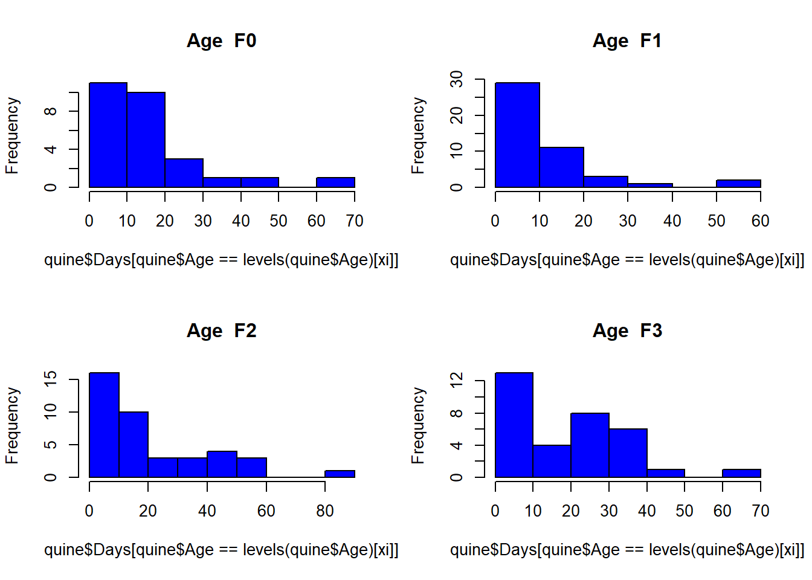
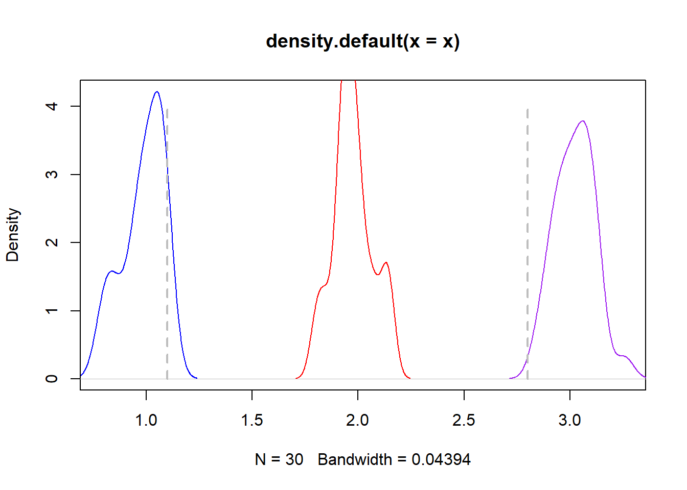
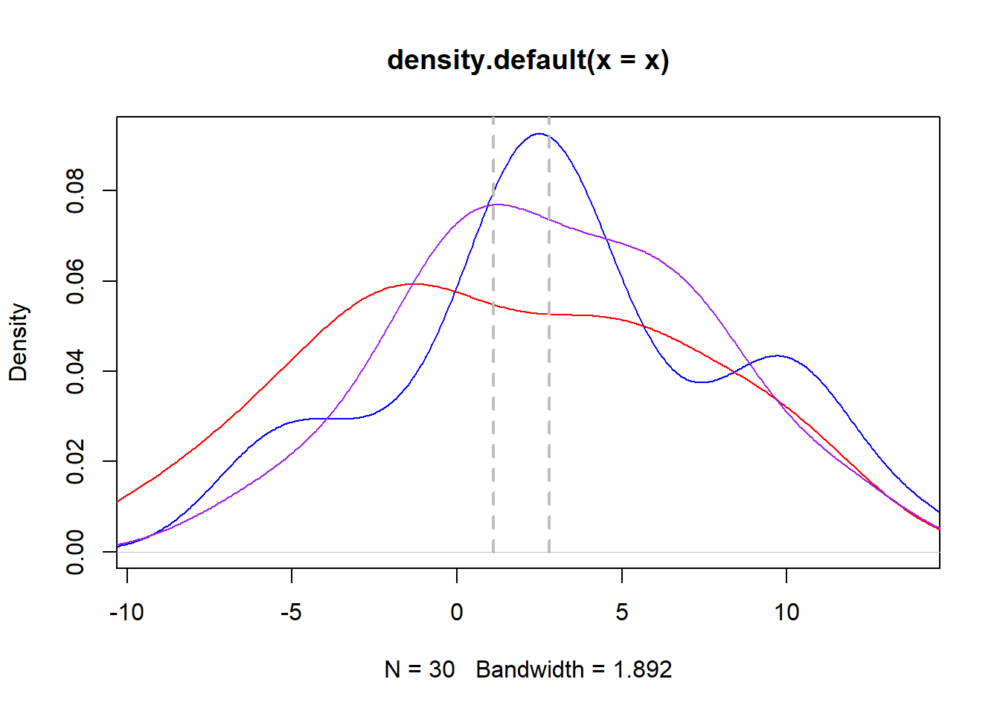
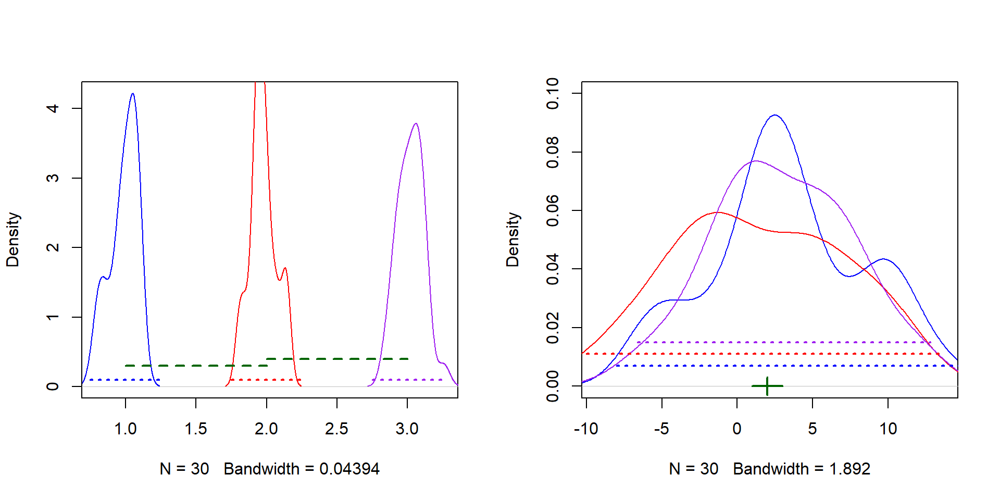
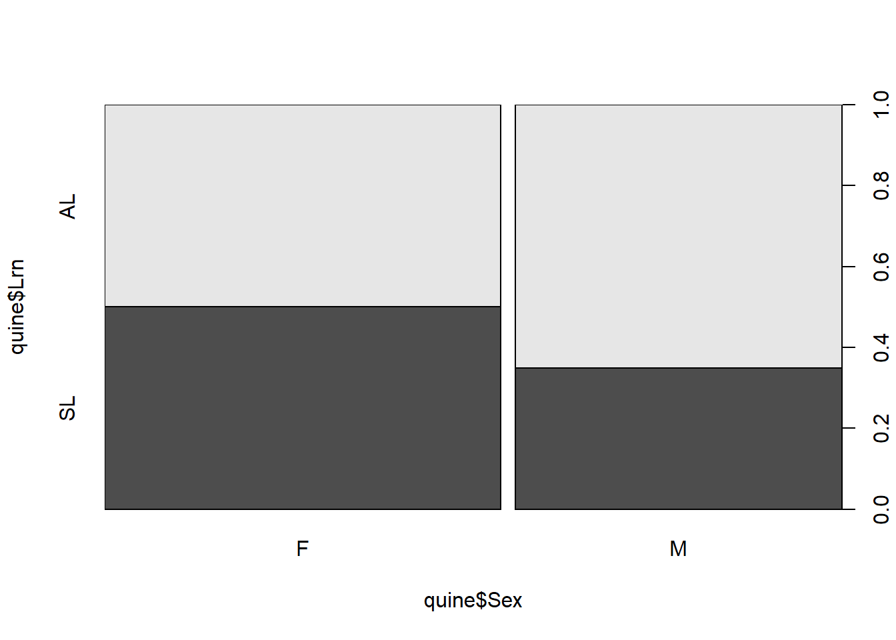
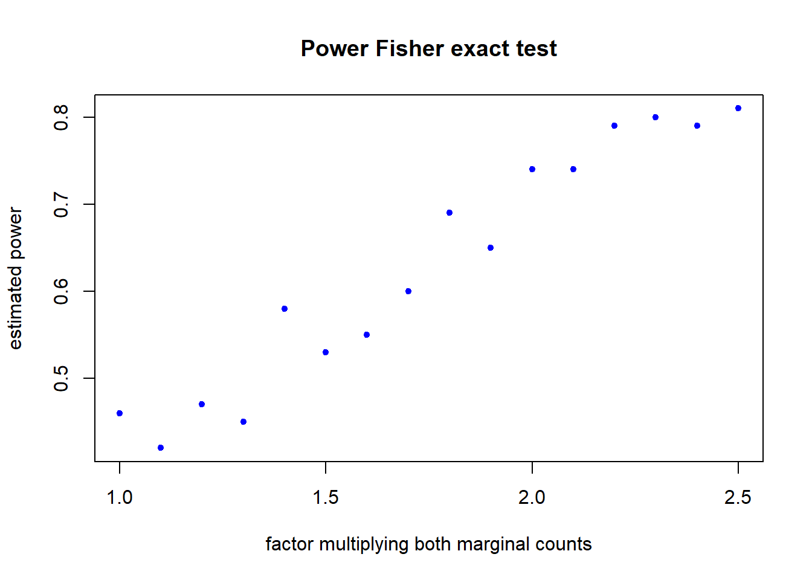

Chapter 4 Statistical tests - Part 2
4.1 Comparing more than two groups
4.1.1 Motivation
Consider the quine data on absenteeism from school in an Australian region. Per child involved in the study, the data includes the number of days absent from school in that year, as well as the age group (in 4 categories). One question is: does the number of absent days change depending on the school year?
library(MASS)
data(quine)
str(quine)## 'data.frame': 146 obs. of 5 variables:
## $ Eth : Factor w/ 2 levels "A","N": 1 1 1 1 1 1 1 1 1 1 ...
## $ Sex : Factor w/ 2 levels "F","M": 2 2 2 2 2 2 2 2 2 2 ...
## $ Age : Factor w/ 4 levels "F0","F1","F2",..: 1 1 1 1 1 1 1 1 2 2 ...
## $ Lrn : Factor w/ 2 levels "AL","SL": 2 2 2 1 1 1 1 1 2 2 ...
## $ Days: int 2 11 14 5 5 13 20 22 6 6 ...# Examine how many observations you have per age group
table(quine$Age)##
## F0 F1 F2 F3
## 27 46 40 33# Now display the data for `Days` per age group
par(mfrow = c(2, 2))
for(xi in 1:nlevels(quine$Age)) {
hist(quine$Days[quine$Age == levels(quine$Age)[ xi]],
col = "blue", main = paste("Age ", levels(quine$Age)[ xi]))
}
You could try to solve this by applying a Student’s-t test, or a Wilcoxon test, to compare each pair of Age levels. This would involve 6 tests.
In such situations, it would be better to compare the means of the groups under study in one go. What we wish to know is: is there at least one age group that does not have the same mean number of absent days as the others?
To do this, we need to better understand what we understand by “having the same mean”.
4.1.2 Working examples
Consider the following data: a continuous variable is observed for cases within groups X, Y, Z. The variable follows a normal distribution with a mean depending on the group: 1, 2 and 3 for groups X, Y, Z respectively. Say that we have 100 observations for each group, and that the empirical densities of the values per group aree:
set.seed(53412)
ssize <- 30
x <- rnorm(ssize, mean = 1, sd = 0.1)
y <- rnorm(ssize, mean = 2, sd = 0.1)
z <- rnorm(ssize, mean = 3, sd = 0.1)
mylims <- range(c(x, y, z))
plot(density(x), xlim = mylims, col = "blue")
lines(density(y), col = "red")
lines(density(z), col = "purple")
segments(1.1, 0, 1.1, 4, lty = "dashed", lwd = 2, col = "gray")
segments(2.8, 0, 2.8, 4, lty = "dashed", lwd = 2, col = "gray")
data1 <- data.frame(x, y, z)We can clearly separate observations arising from these 3 groups. Indeed, for example if we knew that a value of 1.1 was observed for one of these variables, we would guess that it corresponded to a case in group X. Similarly, if we knew that a value of 2.8 had been observed, we would safely guess it to correspond to a case in group Z.
Now let us simulate the data again for the same setup:
set.seed(36912)
x <- rnorm(ssize, mean = 1, sd = 5)
y <- rnorm(ssize, mean = 2, sd = 5)
z <- rnorm(ssize, mean = 3, sd = 5)
mylims <- range(c(x, y, z))
plot(density(x), xlim = mylims, col = "blue")
lines(density(y), col = "red")
lines(density(z), col = "purple")
segments(1.1, 0, 1.1, 4, lty = "dashed", lwd = 2, col = "gray")
segments(2.8, 0, 2.8, 4, lty = "dashed", lwd = 2, col = "gray")
data2 <- data.frame(x, y, z)In this case, it is difficult to distinguish data from these 3 groups. Indeed, we could now not guess to which group a value of 1.1 would correspond: it can be easily generated by cases in either X or Y, and even by some in Z. The same is true for 2.8. Note that the group means are the same as before: 1, 2 and 3. However, now the variance within each group is much larger than for the first data.
What this means is that: observations from these 3 groups are different from each other if they can be distinguished from each other, and that can only be done if the variance between groups is larger than the variance within groups.
par(mfrow = c(1, 2))
mydata <- data1
mylims <- range(c(mydata$x, mydata$y, mydata$z))
plot(density(mydata$x), xlim = mylims, col = "blue", main = "")
lines(density(mydata$y), col = "red")
lines(density(mydata$z), col = "purple")
segments(0.75, 0.1, 1.28, 0.1, lty = "dotted", lwd = 2, col = "blue")
segments(1.75, 0.1, 2.28, 0.1, lty = "dotted", lwd = 2, col = "red")
segments(2.75, 0.1, 3.28, 0.1, lty = "dotted", lwd = 2, col = "purple")
segments(1, 0.3, 2, 0.3, lty = "dashed", lwd = 2, col = "darkgreen")
segments(2, 0.4, 3, 0.4, lty = "dashed", lwd = 2, col = "darkgreen")
mydata <- data2
mylims <- range(c(mydata$x, mydata$y, mydata$z))
plot(density(mydata$x), xlim = mylims, col = "blue", main = "", ylim = c(0, 0.1))
lines(density(mydata$y), col = "red")
lines(density(mydata$z), col = "purple")
segments(-8, 0.007, 15, 0.007, lty = "dotted", lwd = 2, col = "blue")
segments(-10, 0.011, 13.5, 0.011, lty = "dotted", lwd = 2, col = "red")
segments(-6.6, 0.015, 12.8, 0.015, lty = "dotted", lwd = 2, col = "purple")
segments(1, 0.00, 3, 0.0, lty = "solid", lwd = 2, col = "darkgreen")
segments(2, -0.003, 2, 0.003, lwd = 2, col = "darkgreen")
Thus, in order to know if observations corresponding to the different groups can be distinguished or not, we need to consider how large the variance between groups (in green) is, relative to the variances within groups (in their respective colours). This is what the F test does, via the statistic F = variance between groups / variance within groups. If the variance between groups is large compared to the variance within groups, as with the first dataset, observations can be distinguished between groups. Otherwise, observations from different groups overlap, as in the second dataset. The F test is applied assuming that the groups cannot be distinguished, meaning that the variances within and between groups are similar. When observations from the different groups cannot be distinguished, the value of the F-test statistic is around 1. When observations can be distinguished between groups, the value of the F-test statistic will be relatively large, in particular larger than 1. How large it needs to be depends on the number of samples and the number of groups being compared, determining the degrees of freedom used in the F-test statistic.
The F test is the one used in ANOVA (which stands for ANalysis Of VAriance - now you know why!).
Let us apply this to the first dataset we generated. To do this, we need to fit a linear regression to the data with the observed variable as response and the group as explanatory factor. Then we compute the ANOVA table of the resulting fit:
group <- factor(rep(c("X", "Y", "Z"), each = ssize))
mydata <- data1
myvar <- c(mydata$x, mydata$y, mydata$z)
myfit <- lm(myvar ~ group)
anova(myfit)## Analysis of Variance Table
##
## Response: myvar
## Df Sum Sq Mean Sq F value Pr(>F)
## group 2 62.145 31.0725 3524.3 < 2.2e-16 ***
## Residuals 87 0.767 0.0088
## ---
## Signif. codes: 0 '***' 0.001 '**' 0.01 '*' 0.05 '.' 0.1 ' ' 1Examine the ANOVA table. The column “Mean Sq” actually displays the estimated variances. The first row corresponds to group so it is the variance between groups X, Y, Z. The second row corresponds to Residuals, and this is the variance within groups - or the residual variance not explained by group. By dividing the variance between groups by the one within, the F-test statistic is obtained (note that the values printed are rounded off). As we expected, the F-test statistic is very large and its corresponding p-value is very small, in this case.
Now for the second dataset:
mydata <- data2
myvar <- c(mydata$x, mydata$y, mydata$z)
myfit <- lm(myvar ~ group)
anova(myfit)## Analysis of Variance Table
##
## Response: myvar
## Df Sum Sq Mean Sq F value Pr(>F)
## group 2 61.75 30.875 1.176 0.3134
## Residuals 87 2284.17 26.255The F test within the ANOVA table relies on the data arising from a normal distribution. If that is not the case, the alternative is to use the Kruskal-Wallis test, which can be thought of as the nonparametric version of the F test - much in the same way as the Wilcoxon test is the nonparametric version of the Student’s-t test. Two alternative syntaxes for the Kruskal-Wallis test are:
kt <- kruskal.test(myvar, group)
kt##
## Kruskal-Wallis rank sum test
##
## data: myvar and group
## Kruskal-Wallis chi-squared = 2.0227, df = 2, p-value = 0.3637kt2 <- kruskal.test(myvar ~ group)
kt2##
## Kruskal-Wallis rank sum test
##
## data: myvar by group
## Kruskal-Wallis chi-squared = 2.0227, df = 2, p-value = 0.3637The Kruskal-Wallis test is based on ranks of the data. In this case, it is more powerful to find differences between groups than the F test from ANOVA.
Quick task(s):
Solve the task(s), and check your solution(s) here.
4.2 Testing independence in 2x2 tables
4.2.1 Motivation
Consider again the quine data on absenteeism from school in an Australian region. Per child involved in the study, the data includes the number of students with average or slow learning speed Lrn, as well as Sex. One question is: do students of a given sex learn faster than students of the other sex? In other words: is there evidence for association between learning speed and sex? This problem is different from the of comparing two groups with a Student’s-t test, because here both variables (Lrn and Sex) are grouping variables, whilst for the Student’s-t test one variable is continuous and the other is a grouping variable.
We can examine the data to check for evidence of this association. This can be done by computing the number of cases within each class of learning speed Lrn and, of those, how many are of each Sex. We can also display the results as a barplot.
library(MASS)
data(quine)
str(quine)## 'data.frame': 146 obs. of 5 variables:
## $ Eth : Factor w/ 2 levels "A","N": 1 1 1 1 1 1 1 1 1 1 ...
## $ Sex : Factor w/ 2 levels "F","M": 2 2 2 2 2 2 2 2 2 2 ...
## $ Age : Factor w/ 4 levels "F0","F1","F2",..: 1 1 1 1 1 1 1 1 2 2 ...
## $ Lrn : Factor w/ 2 levels "AL","SL": 2 2 2 1 1 1 1 1 2 2 ...
## $ Days: int 2 11 14 5 5 13 20 22 6 6 ...# Examine how many observations you have per age group
table(quine$Lrn, quine$Sex)##
## F M
## AL 40 43
## SL 40 23# Now display the data in this table as a barplot
plot(quine$Lrn ~ quine$Sex)
How do we decide, on the basis of the number of cases for each learning speed and sex, whether or not the two display association?
4.2.2 Working examples
set.seed(55498)
n <- 100
x1 <- rbinom(n, prob = 0.3, size = 1)
y1 <- rbinom(n, prob = 0.2, size = 1)
x2 <- x1
y2 <- rbinom(n, prob = 0.8*x2, size = 1)Let us consider studies involving per case the observation of two variables, X and Y, each one having values \(0, 1\). A table of the observed results is, in study 1:
table(x1, y1)## y1
## x1 0 1
## 0 53 11
## 1 27 9and in study 2:
table(x2, y2)## y2
## x2 0 1
## 0 64 0
## 1 7 29Looking at the tables it is difficult to decide whether or not the variables X and Y are independent or not. In fact, what sort of table would we expect to obtain, if X and Y were independent?
4.2.3 General setup
Consider the generic problem where two grouping variables X, Y are observed, each with groups labelled by either 0 or 1. If X and Y are independent, we would expect that the number of cases with X=0 to be the same, regardless of the value of Y. The estimated probability of a case having X=0 is just the proportion of cases with X=0 in the study - say px0. As a consequence, the probability of a case having X=1 is 1-px0. The same holds for the number of cases with Y=0. We will represent by py0 the probability that Y=0, so 1-py0 represents the probability that of a case having Y=1. If a total of N cases are observed, then the expected number of cases having X=0 is Npx0, and the expected number of cases having Y=1 is N(1-py0).
If X and Y are independent, it follows the number of cases with both X=0 and Y=0 is expected to be N px0 py0, obtained from the product of the separate probabilities of each value of X and Y, in the study.
For an overview, here is the table of expected frequencies in terms of these probabilities is:
| Frequencies | Y=0 | Y=1 | Total |
|---|---|---|---|
| X=0 | N px0 py0 |
N px0 (1-py0) |
N px0 |
| X=1 | N (1-px0) py0 |
N (1-px0) (1-py0) |
N(1-px0) |
| Total | N py0 |
N (1-py0) |
N |
So, if X and Y are independent, we know what to expect. Tests for independence of X and Y compare observed tables with this expected table. The expected table is constructed given the total counts for X and Y per possible value, so the row and column totals. These are called the marginal frequencies of X and Y. So tests for independence consider the row and column totals as fixed.
Note that, given the row and column totals, we need only fix one of the entries in the table, and all others are subsequently determined.
4.2.4 Working examples (cont)
For the first example, the row totals are 64 and 36 for X=0 and X=1 respectively, whilst the column totals are 80 and 20 for Y=0 and Y=1 respectively. This means that the empirical probabilities px0, py0 are respectively 0.64 and 0.8.
If X and Y are independent, the expected table of frequencies given these marginal frequencies is:
| Frequencies | Y=0 | Y=1 | Total |
|---|---|---|---|
| X=0 | N 0.64 * 0.8 |
N 0.64 * 0.2 |
N 0.64 |
| X=1 | N 0.36 * 0.8 |
N 0.36 * 0.2 |
N 0.36 |
| Total | N 0.8 |
N 0.2 |
N |
where N in this case equals 100.
The table formed by the observed marginal frequencies, but not taking into account the actual observations, is
| Frequencies | Y=0 | Y=1 | Total |
|---|---|---|---|
| X=0 | x0y0 |
x0y1 |
64 |
| X=1 | x1y0 |
x1y1 |
36 |
| Total | 80 | 20 | 100 |
where x0y0 and x0y1 represent the counts on the row corresponding to X=0, for Y=0 and Y=1 respectively. Similarly, x1y0 and x1y1 represent the counts on the row corresponding to X=1, for Y=0 and Y=1 respectively.
So, it is possible to observe any table of this form, so long as the counts x0 y0, x0 y1, x1 y0 and x1 y1 are such that the marginal frequencies are observed as given.
As we pointed out, we need only choose a value for one of the entries, and that determines all the other entries in the table. For example, say we set x0 y0 =1. Then the table becomes:
| Frequencies | Y=0 | Y=1 | Total |
|---|---|---|---|
| X=0 | 1 | 64 -1 | 64 |
| X=1 | 80 -1 | 36 - 80 +1 | 36 |
| Total | 80 | 20 | 100 |
Check that the same happens, regardless of the entry chosen. Fix a value for x1 y0 and replace it in the table, and check which values you get for the remaining entries.
4.2.5 The chi-square test
One commonly used test for independence in 2x2 tables is the chi-square test. It involves comparing the observed counts in the table with what would be expected, if X and Y were independent. Given the marginal frequencies, one one entry in the table is needed to determine the entire table.
The test compares the observed (\(O\)) and expected (\(E\)) counts of one entry (say x0 y0) by means of the test statistic:
\[ \chi = \frac{(O-E)^2}{E^2} \]
The null and alternative hypotheses are
\(H_0\): X and Y are independent vs. \(H_a\): X and Y are not independent
Under the null hypothesis, \(\chi\) follows asymptotically a chi-square distribution with 1 degree of freedom - this because, given the marginal frequencies, the table is determined once one entry is fixed.
The term asymptotically means that the distribution of \(\chi\) can be approximated by the chi-square with 1 d.f., under \(H_0\), if the sample size is large enough. The concept of ‘large enough’ may differ depending on the researcher. Many researchers see this as requiring at least 5 observations in all entries of the table. For others, this means that all expected frequencies must be at least 5. The function chisq.test in R will give you a warning if the table used does not warrant the use of the chi-square test. If indeed the frequencies are too small to guarantee that the distribution of \(chi\) can be approximated by the chi-square, Fisher’s exact test can be used (see below).
4.2.6 Working examples (cont)
We now apply the test to the working examples we had. For the first table we have:
table(x1, x2)## x2
## x1 0 1
## 0 64 0
## 1 0 36chisq.test(table(x1, y1))##
## Pearson's Chi-squared test with Yates' continuity correction
##
## data: table(x1, y1)
## X-squared = 0.45844, df = 1, p-value = 0.4984Now for the second table:
myt <- table(x2, y2)
chisq.test(myt)##
## Pearson's Chi-squared test with Yates' continuity correction
##
## data: myt
## X-squared = 68.754, df = 1, p-value < 2.2e-16Note that the test result can be saved and separate slots of the test can be extracted. Here we extract the test statistic, the degrees of freedom and the p-value:
my.chtest <- chisq.test(myt)
my.chtest$statistic## X-squared
## 68.75379my.chtest$p.value## [1] 1.11556e-16my.chtest$parameter # this is the slot containing the p-value -- see ?chisq.test## df
## 14.2.7 Fisher’s exact test
The Fisher’s exact test is another test that can be used to check whether or not two binary variables X and Y are independent. It calculates the probability of each possible 2x2 table of being observed, given the marginal frequencies. Then it adds up the probability of all tables at least as extreme as the one observed to yield a p-value. As it does not require approximations to compute the p-value, it is referred to as the ‘exact’ test, in contrast to the chi-square test with an approximated chi-square distribution. Yielding an exact p-value, it can be applied to all datasets.
4.2.8 Working examples (cont)
We will apply it now to the two tables of the examples. For the first example:
fisher.test(table(x1, y1))##
## Fisher's Exact Test for Count Data
##
## data: table(x1, y1)
## p-value = 0.4361
## alternative hypothesis: true odds ratio is not equal to 1
## 95 percent confidence interval:
## 0.5169743 4.8487080
## sample estimates:
## odds ratio
## 1.598236Now for the second example:
fisher.test(table(x2, y2))##
## Fisher's Exact Test for Count Data
##
## data: table(x2, y2)
## p-value < 2.2e-16
## alternative hypothesis: true odds ratio is not equal to 1
## 95 percent confidence interval:
## 48.98022 Inf
## sample estimates:
## odds ratio
## InfAs for the chi-square test result, slots of the test can be extracted. For example, we extract the p-value:
fisher.test(table(x2, y2))$p.value## [1] 6.726116e-19Quick task(s):
Solve the task(s), and check your solution(s) here.
4.3 Testing independence in nx2 tables
4.3.1 Motivation
Consider now the relationship between learning speed Lrn and age Age in the quine data, from the package MASS:
library(MASS)
table(quine$Age, quine$Lrn)##
## AL SL
## F0 19 8
## F1 15 31
## F2 16 24
## F3 33 0As before, we would like to know if data for the two variables involved, Age and Lrn, suggests that they are independent or not. This table has now more than 2 rows, so Fisher’s exact test is not trivial to apply. However, the chi-square test can be used.
4.3.2 Working examples
set.seed(55498)
n <- 100
x1 <- rbinom(n, prob = 0.3, size = 2)
y1 <- rbinom(n, prob = 0.2, size = 1)
x2 <- x1
lp <- 0.3+2*x2/10
myprob <- exp(lp)/(1+exp(lp))
y2 <- rbinom(n, prob = myprob, size = 1)Let us consider studies involving per case the observation of two variables, X and Y, each one having values \(0, 1\). A table of the observed results is, in study 1:
table(x1, y1)## y1
## x1 0 1
## 0 38 7
## 1 33 10
## 2 9 3and in study 2:
table(x2, y2)## y2
## x2 0 1
## 0 21 24
## 1 6 37
## 2 5 7Looking at the tables it is difficult to decide whether or not the variables X and Y are independent or not. In fact, what sort of table would we expect to obtain, if X and Y were independent?
4.3.3 General setup
We will extend the setup previously used for 2x2 tables to the case where the table has more than 2 rows.
As before, we assume that we are studying two grouping variables X and Y, where X may assume n values and Y may assume 2.
Say that X may assume 3 values, namely 0, 1 and 2. Then, analogously to the 2x2 table, the nx2 table in terms of empirical probabilities is:
| Frequencies | Y=0 | Y=1 | Total |
|---|---|---|---|
| X=0 | N px0 py0 |
N px0 (1-py0) |
N px0 |
| X=1 | N px1 py0 |
N px1 (1-py0) |
N px1 |
| X=2 | N (1-px0-px1) py0 |
N (1-px0-px1) (1-py0) |
N(1-px0-px1) |
| Total | N py0 |
N (1-py0) |
N |
Tests for independence of X and Y compare observed tables with this expected table. The expected table is constructed given the total counts for X and Y per possible value, the marginal frequencies of X and Y. So tests for independence consider the row and column totals as fixed.
Note that, given the row and column totals, we need only fix one of the entries in the table, and all others are subsequently determined.
4.3.4 Chi-square test for nx2 tables
The extension of the chi-square test to nx2 tables is straightforward. We will briefly give the details here.
As before, the marginal frequencies of the observed table are considered as fixed. Using the same reasoning as for 2x2 tables, the probability of each entry in the table is equal to the product of the marginal probabilities.
For each row, since the marginal frequency (total row count) is given, it suffices to fix one of the entries, and the other one is determined. In addition, once one but the last row has one entry fixed, the last row is determined based on the total column counts. This means that, for the first n-1 rows, it suffices to fix one entry to determine the row, and this determines the last row. For this reason, the chi-square test for a nx2 table has n-1 degrees of freedom.
4.3.5 Working examples (cont)
Analogously to the development for 2x2 tables, if X and Y are independent in this 3x2 table example, the expected table of frequencies given these marginal frequencies is, for study 1:
| Frequencies | Y=0 | Y=1 | Total |
|---|---|---|---|
| X=0 | N 0.45 * 0.8 |
N 0.45 * 0.2 |
N 0.45 |
| X=1 | N 0.43 * 0.2 |
N 0.43 * 0.2 |
N 0.43 |
| X=2 | N 0.12 * 0.8 |
N 0.12 * 0.2 |
N 0.88 |
| Total | N 0.8 |
N 0.2 |
N |
where N in this case equals 100.
The table formed by the observed marginal frequencies, but not taking into account the actual observations, is
| Frequencies | Y=0 | Y=1 | Total |
|---|---|---|---|
| X=0 | x0y0 |
x0y1 |
45 |
| X=1 | x1y0 |
x1y1 |
43 |
| X=2 | x2y0 |
x2y1 |
12 |
| Total | 80 | 20 | 100 |
where x0y0 and x0y1 represent the counts on the row corresponding to X=0, for Y=0 and Y=1 respectively. Similarly, x1y0 and x1y1 represent the counts on the row corresponding to X=1, for Y=0 and Y=1 respectively. Finally, x2y0 and x2y1 represent the counts on the row corresponding to X=2, for Y=0 and Y=1 respectively.
So, it is possible to observe any table of this form, so long as the counts x0y0, x0y1, x1y0, x1y1, x2y0 and x2y1, are such that the marginal frequencies are observed as given.
As we pointed out, we need only choose a value for one of the entries per row, and that determines the other entry in the row - except for the last row, which is determined if the first n-1 are filled in. For example, say we set all entries on the first column, for all but the last row, equal to 1. Then the table becomes:
| Frequencies | Y=0 | Y=1 | Total |
|---|---|---|---|
| X=0 | 1 | 45 -1 | 45 |
| X=1 | 1 | 43 -1 | 43 |
| X=2 | 80 -2 | 12 - 80 +2 | 12 |
| Total | 80 | 20 | 100 |
You may wish to check for yourself that the same happens, regardless of the entries chosen to be fixed.
Quick task(s):
Solve the task(s), and check your solution(s) here.
4.4 Testing symmetry in 2x2 tables
4.4.1 Motivation
Patients suspected of having lung cancer get a scan to check if the scan includes anomalies. The scan is analysed by a radiologist, but this may take a few days.
A computer program has been developed to analyse the images and detect anomalies. This is quicker than the radiologist, as the computer can be left continuously running. Researchers want to know if the computer program detects more anomalies than the radiologist or not. How can we decide on this?
Note: any anomaly detected is a positive result so, for the purpose of this example, there are no anomalies not worth being detected (false positives).
4.4.2 Working example
The data consists of two variables: the result of the radiologist res.radio and the result of the computer program res.comp. Each variable has one entry per scan, indicating by the value 1 if an anomaly was found in the scan, and by the value 0 otherwise.
To assess how often the two tests give similar results and how often they do not, we make a table of these variables:
table(res.radio, res.comp)## res.comp
## res.radio no anomaly anomaly
## no anomaly 45 12
## anomaly 7 36Now we need to decide if the difference observed is large enough to suggest one test detects more anomalies than the other.
4.4.3 General setup
In general, two variables X and Y are observed, each corresponding to one test test: pass or fail. A typical table observed is
| Frequencies | Y=fail | Y=pass |
|---|---|---|
| X=fail | a |
b |
| X=pass | c |
d |
The counts a and d correspond to cases where both tests yield the same result: in a cases both tests indicate a fail, and in d cases both tests indicate a pass. So, to decide on whether one of the two tests is better than the other, only counts b and c are informative.
If the tests disagree in a random manner, without a trend towards one yield a pass more often than the other, we expect to see similar values for b and c, relative to all results that disagree b+c. If test X more often yields a pass than test Y, we would expect to see c relatively larger than b, compared with b+c.
The statistical test to answer this question is McNemar’s test. It is implemented in R via the mcnemar.test function. The test computes the probability of observing one of the discordant counts (b, say), or a more extreme value, out of a total b+c counts, at random. For that, typically an approximation of the true binomial distribution to the chi-square (with 1 degree of freedom) is used. In this course, we will use this function for our illustrations.
4.4.4 Working example (cont)
In the study with the scans evaluated by a radiologist and a computer program, we had:
table(res.radio, res.comp)## res.comp
## res.radio no anomaly anomaly
## no anomaly 45 12
## anomaly 7 36Now applying McNemar’s test to the data:
mcnemar.test(table(res.radio, res.comp))##
## McNemar's Chi-squared test with continuity correction
##
## data: table(res.radio, res.comp)
## McNemar's chi-squared = 0.84211, df = 1, p-value = 0.3588Quick task(s):
Solve the task(s), and check your solution(s) here.
4.4.5 Notes
An exact version of the test makes use of the binomial distribution directly. An implementation of this version is also available in R, for example via the exact2x2 package from Michael Fay, which can be found via the link below:
4.5 Relative risk and odds ratio
4.5.1 Motivation
Researchers want to better understand the relationship between smoking and stroke. For this, they have collected data of people who have suffered a stroke in the last 5 years, and from people with similar demographic variables who have never had a stroke. They have then asked these people whether or not they smoked cigarettes regularly, or had done in the past for at least a year, in the 5 years prior to the stroke - these people were considered smokers. All others were considered non-smokers.
This study thus involves cases and controls, and the latter are chosen so as to have a similar profile as that of cases, but there is no 1-1 matching between cases and controls - so no pairs (case, control). The data consists of two variables: smoke indicating whether an individual is categorized as a smoker (yes) or not (no); and stroke indicating whether an individual has had a stroke (1) or not (0).
The observed data can be summarized by tabulating smoke and stroke:
table(smoke, stroke)## stroke
## smoke 0 1
## no 107 43
## yes 26 74Some of the questions researchers want to address are:
- is the risk of having a stroke different between smokers and non-smokers?
- are the odds of having a stroke larger for smokers, compared with non-smokers?
The first question relates to the risk of having a stroke given that someone is a smoker, relative to the risk of having a stroke given that the person is not a smoker. This is what we call a relative risk. In this context, risk has the meaning of probability.
The second question relates to odds, the relation between the number of people who get a stroke and the number of people who do not, given their smoking status. The comparison between the two odds is made via the odds ratio.
We will see these concepts in more detail in the following sections.
4.5.2 Relative risk
Consider a generic table observed as
| Frequencies | Y=0 |
Y=1 |
Total |
|---|---|---|---|
| Cases | a | b | a+b |
| Controls | c | d | c+d |
| Total | a+c | b+d | N |
where the patient status (case or control) is the variable of interest, and Y represents the explanatory grouping variable. There is interest in studying the association between the patient status and the explanatory variable.
The risk of being a case, given that Y=0, is calculated by a/(a+c). Similarly, the risk of being a case, given that Y=1, is calculated by b/(b+d). So, the relative risk is the ratio between these two risks, or (a/b)*(b+d)/(a+c).
If the risk in both groups is similar, the relative risk is approximately 1. Values lower than 1 indicate that the risk amongst observations with Y=1 is smaller than the risk amongst observations with Y=0. Reciprocally, values larger than 1 indicate that the risk amongst observations with Y=1 is larger than the risk amongst observations with Y=0.
For the example of stroke and smoking above, we have cases on row 2 and controls on row 1. In this case, the table is
| Frequencies | Y=0 |
Y=1 |
Total |
|---|---|---|---|
| Controls | 107 | 26 | 133 |
| Cases | 43 | 74 | 117 |
| Total | 150 | 100 | 250 |
Then the risk of stroke amongst non-smokers is 43 divided by 150, which gives
myt <- table(stroke, smoke)
r.stroke.smoke0 <- myt[2, 1]/colSums(myt)[1]
r.stroke.smoke0## no
## 0.2866667Similarly, the risk of stroke amongst smokers is 74 divided by 100, which gives
r.stroke.smoke1 <- myt[2, 2]/colSums(myt)[2]
r.stroke.smoke1## yes
## 0.74The relative risk of having a stroke in smokers compared to non-smokers is then 0.74 divided by 0.29, yielding
rr <- r.stroke.smoke1/r.stroke.smoke0
round(rr, 4)## yes
## 2.5814So, the chance of someone having a stroke is 2.58 larger amongst smokers than amongst non-smokers.
Quick task(s):
Solve the task(s), and check your solution(s) here.
4.5.3 Odds ratio
Consider again the generic table observed as
| Frequencies | Y=0 |
Y=1 |
Total |
|---|---|---|---|
| Cases | a | b | a+b |
| Controls | c | d | c+d |
| Total | a+c | b+d | N |
The odds of being a case amongst individuals with Y=1 is b/d, whilst the odds of being a case amongst individuals with Y=0 is a/c. Then the odds ratio of being a case, of individuals with Y=1 compared to that of individuals with Y=0, is the ratio (b/d)/(a/c), qhich is the same as (bc)/(ad).
If the odds in both groups are similar, the odds ratio is approximately 1. Values lower than 1 indicate that the odds amongst observations with Y=1 are smaller than the odds amongst observations with Y=0. Reciprocally, values larger than 1 indicate that the odds amongst observations with Y=1 are larger than the odds amongst observations with Y=0.
For the example of stroke and smoking above, we have the odds of having a stroke amongst non-smokers being 43 divided by 107. Similarly, the odds of having a stroke amongst smokers is 74 divided by 26. This leads to the following odds: 0.4 amongst non-smokers and 2.85 amongst smokers. Then the odds ratio of having a stroke, between smokers and non-smokers, is 2.85 divided by 0.4, which gives 7.08.
or <- (myt[2, 2] * myt[1, 1]) / (myt[1, 2] * myt[2, 1])Note again that, in this case, cases are on row 2 and controls on row 1.
So, the odds of someone having a stroke is 7.08 larger amongst smokers than amongst non-smokers.
Quick task(s):
Solve the task(s), and check your solution(s) here.
4.5.4 Relative risk vs. odds ratio
In principle, both relative risk and odds ratio are statistics that can be computed, given any 2x2 tables. However, their usefulness, and interpretation, depends on the experimental design used.
The relative risk is evaluated assuming that the relative frequencies a/(a+c) and b/(b+d) are good approximations for the probabilities of being a case, given Y=0 and Y=1, respectively. Since calculations are conditional on the marginal frequencies a+c and b+d, these must represent well the frequencies of Y=0 and Y=1 in the general population, in the sense that (b+d)/(a+c+b+d) is a good estimate of the proportion of individuals with Y=1 in the population under study.
In contrast, the odds ratio does not make use directly of the observed relative frequencies. So it needs not rely on representative (relative) marginal frequencies.
Typically relative marginal frequencies can only be expected in the context of prospective studies. Retrospective studies, especially case-control sudies, do not satisfy this assumption. For this reason, odds ratios are often used in the context of case-control studies, whilst relative risks can only be reliably interpreted in prospective (cohort) studies.
In some cases, the computed relative risk and odds ratio yield similar values. For example, if the marginal frequency a+c is approximately equal to c, and the marginal frequency b+d is approximately equal to d, then it is easy to see that the two statistics will yield similar results. One situation where both \(a+c\approx c\) and \(b+d\approx d\) occur is when the response involves rare cases, so that both a and c are small, and the marginal frequencies of both Y=0 as well as Y=1 are large enough.
4.5.5 Logistic regression models (cont)
The concepts of relative risk and odds ratio have been introduced above, and we computed them on the basis of 2x2 tables. This helps with understanding what they mean. However, 2x2 tables can only represent the relationship between a response (having a stroke or not) and one explanatory (grouping) variable (smoking habit). Most studies involve more variables, and thus more general methods to compute them are needed.
To compute the odds ratio, a logistic regression can be used, allowing for the inclusion of more explanatory variables. In addition, by making use of estimates arising from a regression model, it is straightforward to construct a confidence interval for, and perform a hypothesis test on, computed odds ratios.
Here we will check that this is the case. Indeed, if we fit a logistic regression to the stroke and smoking habit example, we get:
lgfit <- glm(stroke ~ smoke, family = binomial)
summary(lgfit)##
## Call:
## glm(formula = stroke ~ smoke, family = binomial)
##
## Deviance Residuals:
## Min 1Q Median 3Q Max
## -1.641 -0.822 -0.822 0.776 1.581
##
## Coefficients:
## Estimate Std. Error z value Pr(>|z|)
## (Intercept) -0.9116 0.1806 -5.049 4.44e-07 ***
## smokeyes 1.9576 0.2908 6.731 1.68e-11 ***
## ---
## Signif. codes: 0 '***' 0.001 '**' 0.01 '*' 0.05 '.' 0.1 ' ' 1
##
## (Dispersion parameter for binomial family taken to be 1)
##
## Null deviance: 345.55 on 249 degrees of freedom
## Residual deviance: 294.35 on 248 degrees of freedom
## AIC: 298.35
##
## Number of Fisher Scoring iterations: 4sfit <- summary(lgfit)$coefThe coefficient of the smoke variable (corresponding to smoke=yes) in the model is 1.96. It turns out that this is the same as the logarithm of the odds ratio:
# Include computation of or using smoke, stroke
log(or)## [1] 1.957597Alternatively, we compute exp(beta), where beta is the coefficient of smoke=yes estimated by the logistic model. This gives 7.08, which is the same as the odds ratio 7.08 computed from the table.
exp(sfit[2, 1])## [1] 7.08229or## [1] 7.08229So, the log-odds ratio corresponds to the coefficient of a binary variable from a logistic regression. If more explanatory variables are included in the logistic regression, the computed log-odds ratio yields a measurement that is corrected for the effects of the remaining variables.
As we already know, a confidence interval for a coefficient of the fitted regression can be computed. We can use the function confint on the model fit object to do that:
confint(lgfit, 2)## Waiting for profiling to be done...## 2.5 % 97.5 %
## 1.399669 2.542158This is the 95% confidence interval for the logarithm of the odds ratio. Typically there is interest in testing whether the odds ratio is equal to 1 (in which case the odds are the same in both groups). On this scale, this test is equivalent to testing whether the log-odds ratio is equal to 0. The above confidence interval does not include 0, indicating that the null hypothesis that the odds ratio is equal to 1 can be rejected, with a significance level of 0.05 (because it is a 95% confidence interval).
An approximate confidence interval for the odds ratio is then
exp(confint(lgfit, 2))## Waiting for profiling to be done...## 2.5 % 97.5 %
## 4.053859 12.7070694.5.6 Poisson regression models
While odds ratio can be computed by fitting a logistic regression, relative risk can be computed by fitting a Poisson regression.
For some background: the logistic regression assumes that the response observations can be modelled by a binomial distribution, whilst the Poisson regression assumes that the response observations can be modelled by a Poisson distribution. The binomial distribution models counts for a given total, whilst the Poisson distribution models counts without conditioning on a total. So, while both regression models are suitable for a response variable that represents counts, in the logistic regression computations are conditional on the total number of cases and controls observed, which is not the case with the Poisson regression.
We now fit a Poisson regression to the stroke and smoking habits table:
lgfit <- glm(stroke ~ smoke, family = poisson)
summary(lgfit)##
## Call:
## glm(formula = stroke ~ smoke, family = poisson)
##
## Deviance Residuals:
## Min 1Q Median 3Q Max
## -1.2166 -0.7572 -0.7572 0.2867 1.0355
##
## Coefficients:
## Estimate Std. Error z value Pr(>|z|)
## (Intercept) -1.2494 0.1525 -8.193 2.54e-16 ***
## smokeyes 0.9483 0.1917 4.946 7.59e-07 ***
## ---
## Signif. codes: 0 '***' 0.001 '**' 0.01 '*' 0.05 '.' 0.1 ' ' 1
##
## (Dispersion parameter for poisson family taken to be 1)
##
## Null deviance: 177.67 on 249 degrees of freedom
## Residual deviance: 152.01 on 248 degrees of freedom
## AIC: 390.01
##
## Number of Fisher Scoring iterations: 5sfit <- summary(lgfit)$coefThe coefficient of the smoke variable (corresponding to smoke=yes) in the fitted Poisson regression is 0.95. It turns out that this is the same as the logarithm of the relative risk:
log(rr)## yes
## 0.9483301Alternatively, we can compute the relative risk via exp(beta), where beta is the estimated coefficient of smoke=yes in the Poisson regression. This yields 2.58, the same as the computed relative risk from the table 2.58.
exp(sfit[2, 1])## [1] 2.581395rr## yes
## 2.581395Similarly to what was done for the odds ratio, we can now build a confidence interval for the coefficient of the fitted regression. We use the function confint on the model fit object to do that:
confint(lgfit, 2)## Waiting for profiling to be done...## 2.5 % 97.5 %
## 0.5776317 1.3315650This is the 95% confidence interval for the logarithm of the relative risk. Typically there is interest in testing whether the relative risk is equal to 1 (in which case the risk the same in both groups). On this scale, this test is equivalent to testing whether the log-relative risk is equal to 0. The above confidence interval does not include 0, indicating that the null hypothesis that the relative risk is equal to 1 can be rejected, with a significance level of 0.05 (because it is a 95% confidence interval).
Quick task(s):
Solve the task(s), and check your solution(s) here.
4.6 Power for analysis of count tables
4.6.1 Motivation
We want to know how many samples are needed if we were to repeat the study of learning speed and association with sex, using as pilot the data the quine data. Let us first review the data and make the table we will use for analyses:
library(MASS)
# Examine how many observations you have per age group
table(quine$Lrn, quine$Sex)##
## F M
## AL 40 43
## SL 40 23mytable <- table(quine$Lrn, quine$Sex)The aim is to test if there is a statistically significant difference between the proportions of females, between the groups defined by learning speed. We will test this by using either Fisher’s exact test or the chi-square test. Subsequently, we wish to know by how much the sample size would have to change, to modify the test’s conclusions.
4.6.2 Fisher’s exact test
Fisher’s exact test for independence of the marginal counts in this table gives:
fisher.test(mytable)##
## Fisher's Exact Test for Count Data
##
## data: mytable
## p-value = 0.09285
## alternative hypothesis: true odds ratio is not equal to 1
## 95 percent confidence interval:
## 0.258569 1.099752
## sample estimates:
## odds ratio
## 0.5371981So the test is not significant if we use \(\alpha=0.05\).
Now we will evaluate the power of the test to find the difference between proportions to be significant, given the current table. For this, we make use of the function power.fisher.test from the package statmod, which is automatically installed when you install R. As there is no closed form for the distribution of the Fisher’s exact test statistic under the alternative, the power cannot be evaluated on the basis of a mathematical formula. Instead, the function simulates data according to given parameters, and yields the estimated power.
As inputs, the function expects the proportions of females in the two groups (p1 and p2), the sample sizes in the two groups (the row sums), the significance level (\(\alpha=0.05\) is the default), the number of simulations and the alternative (one or two-sided). Below we use the function to compute the power for the table of learning speed and sex from the quine data:
library(statmod)
power.fisher.test(p1 = 40/83, p2 = 40/63, n1 = 83, n2 = 63)## [1] 0.53The estimated power is lower than 0.8, the level typically desired for studies. We could now increase the sample size and check if the desired power of 0.8 would be achieved. Note that we keep the proportions p1 and p2 the same, so that the effect size is the same as for the original data. We also keep the relative proportions in groups 1 and 2 the same, i.e., n1/n2 is kept fixed. We can for example multiply both sample sizes by 2:
power.fisher.test(p1 = 40/83, p2 = 40/63, n1 = 83*2, n2 = 63*2)## [1] 0.74This yields a number closer to 0.8. Let us now define a vector of values which we will multiply both sample sizes by, and compute the power for each value:
sr <- seq(from = 1, to = 2.5, by = 0.1)
powerv <- NULL
for(xi in 1:length(sr)){
powerv <- c(powerv, power.fisher.test(p1 = 40/83,
p2 = 40/63,
n1 = floor(83*sr[xi]),
n2 = floor(63*sr[xi])))}Now we make a graph of the estimated power, as a function of the multiplying factor:
plot(sr, powerv, pch = 20, col = "blue", main = "Power Fisher exact test",
xlab = "factor multiplying both marginal counts", ylab = "estimated power")
We used here a relatively small number of simulations, the default 100. This of course yields variability between estimates, meaning they are not always increasing.
So, a power of at least 0.80 is achieved for the last few multiplying factors, corresponding to minimum sample sizes required of:
min(sr[ powerv >= 0.8 ]*83)## [1] 190.9for group 1, and
min(sr[ powerv >= 0.8 ]*63)## [1] 144.9for group 2. This would yield a total sample size for a new study of:
min(sr[ powerv >= 0.8 ]*83) + min(sr[ powerv >= 0.8 ]*63)## [1] 335.8Note that Fisher’s exact test makes no distinction between rows and columns, in the sense that the test statistic is the same, if we invert rows and columns. So, conclusions here would have been the same if we had used as inputs the proportions of learning speeds per sex, and the column sums, instead.
Quick task(s):
Solve the task(s), and check your solution(s) here.
4.6.3 Chi-square test
The power for a chi-square test can be computed by using the function pwr.chisq.test of the package pwr. This function, as others from the same package, enables us to give all arguments but one, and the function will automatically determine the last argument using all the given ones. Here we will focus on determing the sample size, given the remaining arguments.
We will use in for the same example as above, where we studied the association between learning speed and sex, using the quine data. Let us first use the chi-square test to test for the association between the two variables, and save the observed test statistic:
chisq.test(mytable)##
## Pearson's Chi-squared test with Yates' continuity correction
##
## data: mytable
## X-squared = 2.7949, df = 1, p-value = 0.09456chisq.stat <- chisq.test(mytable)$statBased upon this test result, we conclude that there is no statistically significant association between learning speed and sex, with a significance level of 0.05. How large would the sample size need to be, in order to yield a statistically significant result?
We already knew that a chi-square test statistic for a 2x2 table has, under the null hypothesis of no association between rows and columns, asymptotically a chi-square distribution with 1 d.f.. The power we may state as 0.8, and the significance level remains 0.05.
We need also to state which effect size is required. This would be the effect size observed in the current data. It is equal to the square root of the observed test statistic, divided by the sample size of the current study. We have already computed the observed test statistic, and the sample size of the current study can be computed by sum(mytable). Then we have:
eff.size <- sqrt(chisq.stat/sum(mytable))Now load the package required and compute the minimum sample size:
library(pwr)
pwr.chisq.test(w = eff.size, df = 1, power = 0.8)##
## Chi squared power calculation
##
## w = 0.1383592
## N = 410.0061
## df = 1
## sig.level = 0.05
## power = 0.8
##
## NOTE: N is the number of observationsQuick task(s):
Solve the task(s), and check your solution(s) here.
4.6.4 Odds ratio
The minimum sample size required to find a specific odds ratio as different from 1 is the same as the one required to find the log-odds ratio as different from 0. Thus, the power analysis required is the same as the one for a coefficient from the logistic regression.
4.6.5 Notes
We have used a choice of functions available in R to explain the concept of minimum sample size, and illustrate how it varies according to various parameters, for the chi-square and Fisher’s exact tests. However, there are other choices of functions, which may be more convenient for a particular application.
To estimate the minimum sample size required for McNemar’s test of symmetry, we suggest using the exact2x2 package. We refer to the vignette of the McNemar’s test functions implemented in the package for more details:
https://cran.r-project.org/web/packages/exact2x2/vignettes/exactMcNemar.pdf